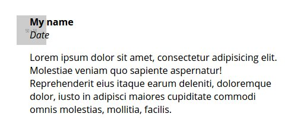
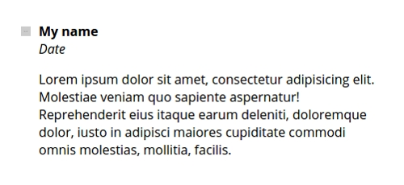

虽然语法可能比较混杂，但 Flexbox 还是名不虚传的。它创造的是可伸缩的、有弹性的、可改变视觉顺序的智能盒子。它提供了简单的CSS布局方案范例让容器总是处于垂直水平居中的位置。使用盒模型来工作是非常通用的。
Flexbox Layout（弹性盒模型）模块（目前W3C工作草案正在最后通过）的目的是为了提供一种更有效的方式来布局，使各模块即使大小是未知或者动态的也可以在项目空间中合理分配位置（就像“弹性”这个词一样）。 弹性布局的主要思想是：让这个容器有能力自动改变宽高（和顺序）来尽可能地填充可用空间（大多用来适应所有类型的显示器的屏幕尺寸）。Flex容器可以扩展它的模块来填充可用空间或缩小来防止溢出。
Flexbox真正的发光是在HTML5 Web应用上。大多数Web Apps 由一系列模块化、可重用的组件组成。你可以使用Flexbox来为那些令你头痛的和依赖于脆弱的CSS hack 的地方布局。好的方法是使用Flexbox对小模块的地方进行布局，然后用
float
和其它工具来布局更广泛的地方。
我正在做的Web应用程序上使用了很多的Flexbox，我非常喜欢它处理布局和盒子的智能计算。我想要分享一些关于盒模型的例子，如果有什么反馈我将感激不尽。
本文假定你已经有一定相关的Flexbox工作经验。网上也有大量关于这方面的信息。请记住，它的规范已经经历了很多年的变化。
如果你对Flexbox一无所知，或者从未了解，译者建议您先点击 这里 了解有关于Flexbox的相关知识。
Flexfox经历过三个版本，主要区别是2009年到2012年之间的语法变化。
-
最新的语法和现在规范是同步的（例
display:flex）。 -
在这之间的语法是2012年出现的非官方语法，只能被IE识别（例
display: -ms-flexbox）。 -
最老的语法产生于2009年（例
display: box）
浏览器支持情况
让我们来具体看看那些浏览器支持那些语法以及 支持情况
支持新语法的浏览器
PC端：
- 无前缀：Chrome 29+, Firefox 28+, IE 11+, Opera 17+
-
需要前缀：Chrome 21+, Safari 6.1+, Opera 15+需要前缀
-webkit-
提示：
旧版本的Firefox（22-27）支持除了
flex-wrap
和
flex-flow
之外的新语法。Opera (12.1+ - 17+)使用
flex
可以没有私有前缀，但是中间的15和16版本需要私有前缀。
移动端：
- 无前缀：Android 4.4+, Opera mobile 12.1+, BlackBerry 10+, Chrome for Android 39+, Firefox for Android 33+, IE 11+ mobile
-
需要前缀：iOS 7.1+需要前缀
-webkit-
几乎上述所有浏览器的旧版本都支持Flexbox的版本退化，除了一些像
flex-wrap
和
flex-wrap
的属性（后者是
flex-direction
和
flex-wrap
属性的简写）。通过避免
flex-wrap
我们得到了浏览器对于合并新旧语法惊人的支持。
支持中间语法的浏览器
PC端和移动端：
IE10（使用
-ms-
私有前缀）。
支持旧语法的浏览器
所有PC端和移动端的浏览器都需要加
-webkit-
的私有前缀（除了firefox需要使用
-moz-
前缀）。
- PC端： Firefox 2 – 21, Chrome 4 – 20, Safari 3.1 – 6
- 移动端 Android 2.1 – 4.3, iOS 3.2 – 6.1, UC browser 9.9 on Android, BlackBerry 7
对于具有自动更新功能的现代浏览器（比如Chrome, Firefox, IE and Opera的桌面浏览器），可以直接使用新的语法形式。
不支持flexbox语法的浏览器
- PC端： IE9和Opera12以下
- 移动端 Opera Mini
如果你被私有前缀的数量和语法的改变所吓到，你需要看一下 Chris Coyier的建议
你开可以通过以下工具去获得浏览器私有前缀最好的支持
- Autoprefixer 有了这个通用的私有前缀编写工具，就可以为你写的css或预处理文件添加相应的前缀
- Sass flexbox mixins
- Less :LESS mixin 有两种形式：对于IE10 而言 有 或者 没有 中间语法。
根据以下这些原因我会建议使用Autoprefixer。我还没有尝试过其它预处理器的解决方案，如果你有欢迎提出任何意见。需要注意的是，如果你使用一个mixin的辅助库（例如Bourbon或Sass的Compass，Stylus的Nib和LESS的LESS Hat），它需要建立在对flexbox私有前缀支持的基础上。
有了这样一个Autoprefixer工具，实际上你得到了除了IE9和Opera Mini之外的，对flexbox很大程度上的支持。当然，你依旧需要在所有浏览器上彻底测试你的应用程序，以确保对不同语法的支持。
让我们来看看几个不错的 关于使用flexbox的web app的例子 。
一个父元素包含不定数量的子元素
用例： 我的App具有搜索过滤功能。搜索过滤器的数量取决于用户是否登陆。匿名用户可以看到两个过滤器（“公众”和“最新”），登陆用户可同时看到四个（还有“主要”和“收藏”）。
问题： 我想要在不对CSS样式做任何改变的情况下适应这两种选项。
讨论：
大家通常在你的模板里使用
if
声明来处理登陆用户的状态。如果你使用
float
来布局，你还需要为匿名用户的过滤器设置
50%
的宽度，为登陆用户的过滤器设置
25%
的宽度。
解决方法：
使用Flexbox，你只需要通过为父容器设置
display：flex
然后给子元素的
flex
属性设为
1
，这将让每个子元素在父容器内占据相等的宽度。所以，无论视图怎么改变css样式都不需要改变。请记住
flex
属性是
flex-grow``flex-shrink
和
flex-basis
的简写。
示例：
可以在 CodePen 上看到Karen Menezes( @imohkay )做的示例 Felxbox：一个父元素包含不定数量的子元素
带图标的输入框
用例： 我想要在我的表单输入框上加一个有意义的图标。
问题： 我想要一个不必规定宽高的灵活的优雅的解决方案。
讨论：
这是一个经典问题。不同的前端框架有不同的处理方法，大多数是用
display:table-cell
或者使用绝对定位。
解决方法
这里有一个Flexbox的方法。所有我们需要做的就只是把
input
框和图标包在一个父元素内部，并为这个父元素设置
display:flex
，然后，为
input
框添加
flex:1
，让它占用父元素减去图标宽度的剩余空间。
示例： （通过CDN使用Font Awesome 字符图标很方便）
可以在 CodePen 上看到Karen Menezes( @imohkay )做的示例 Felxbox：带有图标的输入框
视觉顺序
Flexbox可以用来改变文档的视觉顺序但依旧会根据文档的原顺序来保留 导航 的完整性。我们作为开发人员的主要工作是负责使用Flexbox排序机制所产生的巨大能量。
事实上，我们可以通过对源文件使用适当的辅助技术来构建我们的文件像屏幕阅读器那样（比如：在源顺序里把侧边栏放在主内容之前），并且使用flexbox简单的改变可视顺序来使用户图形界面更加友好化(通过
order
和
flex-direction
属性来把侧边栏竖立在主内容的右侧)。让我们俩看看这些细节。
flex-direction 产生的视觉独立
用例： 我有一个侧边栏定位在主内容的右侧。在小屏幕上，我想改变顺序把侧边栏放在主内容的顶部。
问题： 我不想使用JavaScript或者CSS hack的方式来改变视觉顺序。
讨论：
Flexbox在布局方面是不可知论的。这是它成为一个响应式布局的神奇工具。我们可以通过两种方式来做到这一点：使用
flex-direction
属性或
order
属性。让我们来看看这里的第一个方法。
解决方法：
让我们把侧边栏放在我们代码布局中的第一部分。这符合逻辑的原因有两个：它坚持移动优先的布局原则，吧侧边栏链接放在元顺序的优先位置是对屏幕阅读器有益的。然后我们在父元素中声明
flex-direction
（因为
row
是默认值）。在我们的大屏幕上，我们将把
flex-direction
替换成
row-reverse
，这样就解决了我们的问题。
作为奖励，我们将放一个fixed-width 的侧边栏（它在大屏幕和移动屏幕上始终是180px）。
示例：
可以在 CodePen 上看到Karen Menezes( @imohkay )做的示例 Felxbox：使用flex-direction让侧边栏与源顺序无关
order 产生的视觉独立
我们的用例与问题和上面的例子相同。
讨论：
order
属性可以比
flex-direction
更精确的控制视觉顺序。
解决方法：
我们在父元素上声明
flex-direction:column
让它在手机上两列叠加。然后，设置一个媒体查询的
min-width
，我们将把
flex-direction
变成
row
,这样将把侧边栏放在左侧，把主内容放在右侧。为了改变顺序，我们为主内容设置
order:1
为侧边栏设置
order:2
！
示例：
可以在 CodePen 上看到Karen Menezes( @imohkay )做的示例 Felxbox：使用order让侧边栏与源顺序无关
切换升序和降序
用例： 我想要显示2013年好莱坞收入最高的五个演员名单，允许切换顺序。
问题： 我无来由的想使用纯CSS来实现这个效果，但我并不确定它是否可行。
讨论： 这是一个简单的没有JavaScript演示，来展示Flexbox的强大。也许有一点疯狂、不切实际，但让我们来看看是否有这样一种方式。
解决方法：
我们将添加一个有
label
的复选框，通过复选框的选中来切换成由低到高的顺序。下面，我们将添加演员的名单。使用CSS的
:checked
伪类来检查是否被选中。我们选择复选框后立即反转无序列表的顺序（通过使用
flex-direction
）。虽然这很奇怪，但它是完美的作品，除非你使用屏幕阅读器或键盘导航。在下面的演示中，选择复选框使用键盘导航可以看到这种影响。规范中提到
order
既不影响
tabindex
也不影响
视觉媒体。因此，我不推荐把这种解决方案放在你的项目中。或许它可以在一个快速原型中派上用场。
提示：
在Firefox现在的版本中有一个bug
（Ubuntu的34版本，Mac OS X 和Windows的33版本）会导致
tableindex
准守改变后的顺序而不是源顺序。你可以看一下CSS社区的
测试用例
。
示例：
可以在 CodePen 上看到Karen Menezes( @imohkay )做的示例 Felxbox：切换列表顺序
注释模块
用例： 我有一个典型的注释模块，图片在左面，内容在右面。图片头像始终是同样的宽高（注：这不是响应式的）。
问题： 我使用Flexbox，但这样内容和图片会重叠：

如果你在图片上设置
max-width:100%;height:auto
，就会变成下面这样：

讨论：
这个例子类似于上面带图标的输入框的例子。但是我们可以用它来讨论
flex-shrink
属性，这在你某些情况下是非常方便的。
解决方法：
在包裹图片和文字的父元素上添加
display:flex
。你会发现文本覆盖在头像图片上（或者该头像图片非常的小，就像上面那张图片那样）。为了克服这个情况，你可以在图片上声明
flex-shrink:0
，这确保了它不会收缩来适应其它flex项目的宽度。另一种方法是为注释的文本添加
flex:1
。这种情况下，你不需要在头像上设置
flex-shrink:0
。总的来说，规范推荐使用flex速记的方法，但它可以让你很好的理解
flex-shrink
属性。
示例：
可以在 CodePen 上看到Karen Menezes( @imohkay )做的示例 Felxbox的注释模块
复杂的菜单
用例： 我的app上有一个菜单，其中包括搜索和排序部件。它融合了按钮，输入框，图标和文本。
问题： 我担心在不同尺寸的屏幕上布局会被打乱。
讨论： 这是一个完美的flexbox用例。有些地方需要固定宽度，而有些地方则需根据屏幕的宽度进行填充。
解决方法： 我们可以通过Flexbox进行垂直居中并用相对较少的代码灵活书写查找排序模块。
示例： （通过CDN使用Font Awesome 字符图标很方便）
可以在 CodePen 上看到Karen Menezes( @imohkay )做的示例 Felxbox示例：搜索和过滤
卡片
用例： 我想基于Google Material Design文档 的卡片组件为我的app创建一个卡片模块。这个卡片要支持移动端。
问题： 在大屏幕上，我希望卡片是内联的。卡片在同一水平线上的高度应该是相同的，尽管没有在行上为它们设置标记。“查看更多”按钮应该始终位于卡片底部。
讨论：
我们可以看一下Flexbox模块中的附加属性。比如说用
margin:auto
智能的处理间距。
解决方法：
Flexbox提供了一个令人难以置信的解决方案来解决一个庞大的CSS问题：高度相同。事实上，Flexbox非常灵活，它允许一行里的卡片等高，尽管这组卡片没有被包裹在一个div里。它也允许“查看更多”出现在底部就像使用绝对定位放在了卡片的底部一样。使用一个
margin:auto
就可以了。
示例：
（如果某些旧的浏览器不兼容就使用
flex-wrap
属性。）
可以在 CodePen 上看到Karen Menezes( @imohkay )做的示例 Felxbox：卡片模型
结论
如果受众是那些在智能手机上使用新版本浏览器的人，Flexbox可能是最合适的混合web app。事实上，一些流行的前端框架也有使用Flexbox，包括ZURB的 Foundation for Apps (也可以在 GitHub 上看到)和 Ionic 。
如果你的应用程序只需要现代浏览器的支持，欢迎加入！使用像Autoprefixer这样的工具，很容易过渡到flexbox多个版本和语法汤羹的世界里。虽然Flexbox和
float
很搭配，它也可以代替它做一些目前没有其他布局模式可以做到的布局，包括内联块、表格显示、绝对定位。“CSS网格布局模块”的目的是取代像类似
float
的解决方法和hack。但它现在正处于起步阶段，只有很少的浏览器支持。在未来的某一天，我很愿意想象我们将全部使用CSS网格和Flexbox来构建更直观的用户界面，因为他们的发挥更好。
Flexbox需要一段时间才能让你“啊哈！”，因为他涉及到要你忘记那些你已经知道的CSS布局方式。一旦你讲了一口流利的Flexbox语言，你设计响应式应用程序的过程将变得轻松，你的样式表也将更加的简洁。
扩展阅读
- Flexbox中文教程
- Flexbox
- Designing CSS Layouts With Flexbox Is as Easy as Pie
- A Complete Guide to Flexbox
- Flexbox Adventures
- Are We Ready to Use Flexbox?
- Flexy Boxes
- Flexbox Nav Bar With Fixed, Variable, and Take-Up-The-Rest Elements
- Solved by flexbox
- Flexbugs
- Using CSS Flexible Boxes
- The Ultimate Flexbox Cheat Sheet